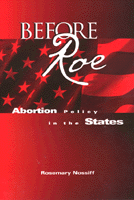

A groundbreaking look at abortion politics among parties and interest groups
A groundbreaking look at abortion politics among parties and interest groups


 A groundbreaking look at abortion politics among parties and interest groups
A groundbreaking look at abortion politics among parties and interest groups

|  |
Before RoeAbortion Policy in the StatesRosemary Nossiffpaper EAN: 978-1-56639-810-7 (ISBN: 1-56639-810-X) |
"Without question people's positions on abortion are shaped by a myriad of social, moral, and economic factors. But ultimately abortion policy is shaped in the political arena. This book examines how one of the most intimate decisions a woman makes, whether to continue or terminate a pregnancy, has become one of the most politicized issues in contemporary American politics."
—From the Introduction
Few issues in contemporary U.S. politics have remained on the public agenda so long and so divisively as abortion policy. The landmark Supreme Court decision of Roe v. Wade, which held that laws prohibiting first trimester abortions were illegal because they violated a woman's right to privacy, still generates heated controversy today, a quarter of a century after it was made. The seeds of that controversy were sown in the seven years immediately preceding Roe, when state legislatures tried to reconcile religious opposition to abortion and individuals' civil liberties.
In this ground-breaking book, Rosemary Nossiff examines the forces that shaped abortion policy during those years, and the ways in which states responded to them. To provide the in-depth analysis while still looking broadly at the picture, she studies New York, which passed the most permissive abortion bill in the country, and Pennsylvania, which passed one of the most restrictive. That these two states, which share similar demographic, political, and economic characteristics, should reach two such different outcomes, provides a perfect case study for observing political dynamics at the state level.
Professor Nossiff examines the medical, religious, and legal discourses employed on both sides of the debate, as well as the role played by feminist discourses. She looks at the role of the political parties in the campaigns, as well as such interest groups as the National Council of Catholic Bishops, the Clergy Consultation Service, the National Organization for Women, and the National Association for the Repeal of Abortion Laws. In addition, she analyzes the strategies used by both sides as well as partisan and institutional developments that facilitated success or failure. Finally, in the Epilogue, she assesses the Roe decision and its aftermath, including an analysis of the pro-life movement in Pennsylvania.
As the author remarks, "Without questions people's positions on abortion are shaped by a myriad of social, moral, and economic factors. But ultimately abortion policy is shaped in the political arena. This book examines how one of the most intimate decisions a woman makes, whether to continue or terminate a pregnancy, has become one of the most politicized issues in contemporary American politics."
Excerpt available at www.temple.edu/tempress
"Rosemary Nossiff has done a great service by putting the ongoing abortion debate into the appropriate historical context. Her careful study—which clearly explicates the roles of all the institutional actors in the pre-Roe policy making processes—makes this an important book for anyone, from lay reader through professional scholar, seeking a clear understanding of this issue that has polarized American society for nearly two decades."
—L. Sandy Maisel, William R. Kenan, Jr. Professor of Government, Colby College
"An insightful study into the politics behind the abortion debate. By comparing how Pennsylvania and New York re-examined their abortion laws, and why these neighboring states went in different directions, Nossiff shows how important the political context is to the creation of public policy."
—Jo Freeman, political scientist, attorney, and author of A Room at a Time: How Women Entered Party Politics
"Nossiff provides a map of the changing and shifting politics of abortion in the pre-Roe period, when outcomes of the political contests remained uncertain."
—Journal of Women's History
Read a review from Publius, Winter 2002, written by Suzanne U. Samuels (pdf).
Acknowledgments
Introduction
1. Reform and Opportunity
2. Competing Discourses
3. Gender Identity and Political Mobilization
4. Party Politics in New York
5. Interest-Group Politics in Pennsylvania
6. Party, Discourse, and Policy
7. After Roe: The Pendulum Swings Back
Conclusion
References
Index of Cases
General Index
 | Rosemary Nossiffis Associate Professor of Political Science at Marymount Manhattan College. |
Political Science and Public Policy
Women's Studies
© 2015 Temple University. All Rights Reserved. This page: http://www.temple.edu/tempress/titles/1529_reg.html.